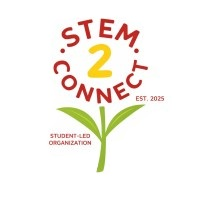
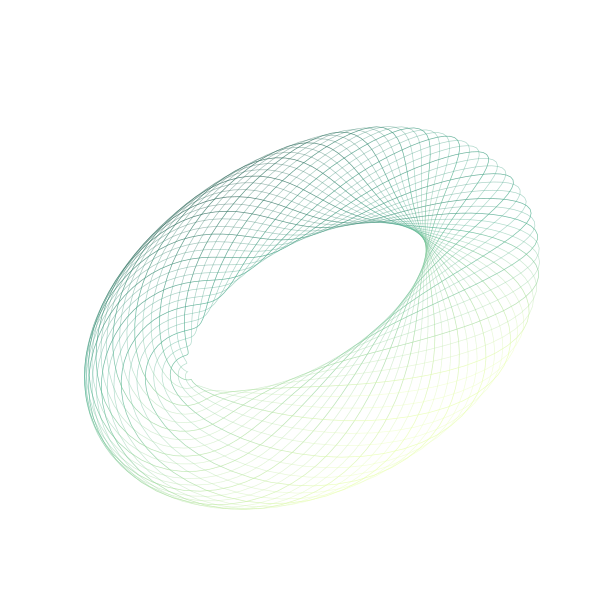

Learn by building
Use modern AI tools and APIs to make a project, not just a prototype deck.

STEM2ConnectSTEM2CONNECT PRESENTS
A global project-building experience for students who want to learn with AI, build something real, and create lasting impact.
No coding experience? No problem. If you can describe a problem and are willing to learn, you can participate.

SCROLL TO INITIALIZE
The STEM2Connect Hackathon puts learning, mentorship, and real-world impact ahead of high-pressure competition. Over several weeks, you will turn a focused idea into a functional project with a team, mentors, and an international community behind you.
See what you will buildUse modern AI tools and APIs to make a project, not just a prototype deck.
Form a team of 2-3 or join individually and connect with collaborators.
Promising teams can continue developing their ideas after Demo Day.
Bring friends, meet collaborators, or participate on your own.
Learn problem validation, AI tools and APIs, design, and pitching. Every session is recorded.
Create a simple, functional solution and get thoughtful feedback along the way.
Show what you built, what you learned, and the impact your project could make.
Each track is a starting point, not a limit. Choose the problem you care about and make it yours.
Learning, accessibility, tutoring, and academic organization.
Health education, patient resources, public health, and access.
Climate, resource efficiency, environmental challenges, and living well.
Tools for analysis, organization, collaboration, and communication.
Accessibility, inclusion, volunteering, and information sharing.
AI COMPONENT REQUIRED Every project connects to at least one AI-related tool, API, dataset, or external service.
Industry professionals, researchers, engineers, domain experts, and STEM2Connect team members will help you navigate the work.
Experienced mentors support ambitious technical projects. STEM2Connect mentors make sure every team has guidance, accountability, project planning help, and presentation support.
YOUR MENTOR CAN HELP WITH
Your source code and project documentation, ready to share.
A short walk-through that shows your project working.
Present the problem, solution, learning, and next steps on Demo Day.
High-performing and deeply committed teams may receive continued mentorship, guidance, future program connections, and opportunities to develop their projects into research, leadership, or community initiatives.
READY WHEN YOU ARE
Join a global community of students learning how to turn ideas into impact.
Register for the Hackathon